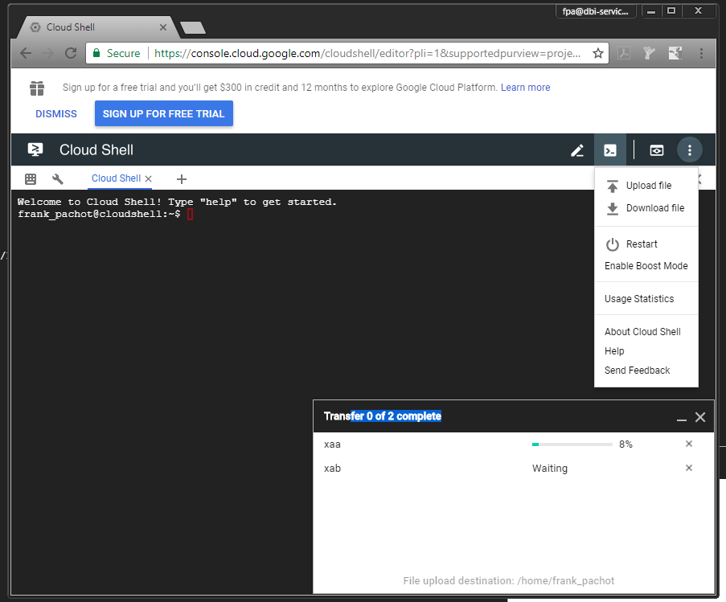

In a previous post I’ve listed several free online services which run an Oracle XE so that you can test your SQL easily. You may want use Oracle XE further, with full access to the database and its host, and still from a web browser. You probably have a Google account. Then you also have a Virtual Machine on the Google Cloud (0.5 vCPU / 1.70 GB RAM boostable to 1 vCPU / 3.75 GB) and 5 GB of persistent storage (as long as you used it in the 120 previous days). Just try this Google Cloud Shell: https://console.cloud.google.com/cloudshell. In this post, I explain how to install Oracle XE there. First, you need to download Oracle XE. You do that on your laptop to upload it to the Google Cloud Shell. For legal reason, there is no automated way to download it with wget because you have to manually accept the OTN License Term: http://www.oracle.com/technetwork/database/database-technologies/express-edition/downloads/index.html and choose ‘Oracle Database Express Edition 11g Release 2 for Linux x64′
You can try to upload it to the Cloud Shell directly (menu on top right – upload file) but I had problems with the size of the file, so I’ve split it into two files:
split -b 150M oracle-xe-11.2.0-1.0.x86_64.rpm.zipYou should have ‘split’ even on Windows (Ubuntu Bash Shell) but you can also use any tool. 7-zip can do that.
I uploaded the two files: 
Now on the Google Cloud shell, concatenate the files back to the .zip:
franck_pachot@cloudshell:~$ cat xa* > oracle-xe-11.2.0-1.0.x86_64.rpm.zip
Unzip it:
franck_pachot@cloudshell:~$ unzip oracle-xe-11.2.0-1.0.x86_64.rpm.zip Archive: ora.zip creating: Disk1/ creating: Disk1/upgrade/ inflating: Disk1/upgrade/gen_inst.sql creating: Disk1/response/ inflating: Disk1/response/xe.rsp inflating: Disk1/oracle-xe-11.2.0-1.0.x86_64.rpm
This .zip contains a .rpm but we are on Debian in the Google Cloud Shell. In addition to that, I’ll not follow the standard installation of Oracle XE because only my $HOME filesystem is persistent, so I want everything there. I need rpm2cpio to extract from the .rpm, and I’ll need libaio1 to install Oracle:
franck_pachot@cloudshell:~$ sudo apt-get -y install rpm2cpio libaio1
Here is the extraction:
franck_pachot@cloudshell:~$ rpm2cpio Disk1/oracle-xe-11.2.0-1.0.x86_64.rpm | cpio -idmv
This extracted to u01, etc and usr in my $HOME directory and I’ll leave the Oracle Home there. I can remove the intermediate files:
franck_pachot@cloudshell:~$ rm -f xa? oracle-xe-11.2.0-1.0.x86_64.rpm.zip Disk1
The Oracle XE deployment contains a ‘createdb.sh’ which will create the XE database. You don’t have dbca here, you don’t have templates. Oracle XE is build to be small. Just set ORACLE_HOME, PATH, LD_LIBRARY_PATH and run createdb.sh
export ORACLE_HOME=$HOME/u01/app/oracle/product/11.2.0/xe echo "$PATH" | grep "$ORACLE_HOME" || export PATH=$PATH:$ORACLE_HOME/bin echo "$LD_LIBRARY_PATH" | grep "$ORACLE_HOME" || export LD_LIBRARY_PATH=$LD_LIBRARY_PATH:$ORACLE_HOME/lib createdb.shThis takes time: create database, catalog, catproc… and the you have your database
The listener is not started. We need to create the directory for the log, and to define listener.ora to listen on default port:
mkdir -p ./u01/app/oracle/product/11.2.0/xe/network/log echo "LISTENER=(DESCRIPTION_LIST=(DESCRIPTION =(ADDRESS = (PROTOCOL = TCP)(HOST = 0.0.0.0)(PORT = 1521))))" > ./u01/app/oracle/product/11.2.0/xe/network/admin/listener.ora lsnrctl start export ORACLE_SID=XE sqlplus sys/oracle as sysdba <<<'alter system register;'
You should see the XE service registered here:
franck_pachot@cloudshell:~$ lsnrctl status LSNRCTL for Linux: Version 11.2.0.2.0 - Production on 25-FEB-2018 23:01:40 Copyright (c) 1991, 2011, Oracle. All rights reserved. Connecting to (DESCRIPTION=(ADDRESS=(PROTOCOL=TCP)(HOST=0.0.0.0)(PORT=1521))) STATUS of the LISTENER ------------------------ Alias LISTENER Version TNSLSNR for Linux: Version 11.2.0.2.0 - Production Start Date 25-FEB-2018 23:00:01 Uptime 0 days 0 hr. 1 min. 38 sec Trace Level off Security ON: Local OS Authentication SNMP OFF Listener Parameter File /home/frank_pachot/u01/app/oracle/product/11.2.0/xe/network/admin/listener.ora Listener Log File /home/frank_pachot/u01/app/oracle/product/11.2.0/xe/network/log/listener.log Listening Endpoints Summary... (DESCRIPTION=(ADDRESS=(PROTOCOL=tcp)(HOST=0.0.0.0)(PORT=1521))) (DESCRIPTION=(ADDRESS=(PROTOCOL=tcp)(HOST=127.0.0.1)(PORT=8080))(Presentation=HTTP)(Session=RAW)) Services Summary... Service "XE" has 1 instance(s). Instance "XE", status READY, has 1 handler(s) for this service... Service "XEXDB" has 1 instance(s). Instance "XE", status READY, has 1 handler(s) for this service... The command completed successfully
Note that you cannot access your Google Cloud shell from outside, and then you can connect locally. But having a listener and connecting through services is always a good idea.
If your session is inactive, you may lose the connection and even have the VM stopped. But your $HOME will still be there when you restart, so you can set the .profile to set the correct environment and start the listener and database if not already running:
cat >> ~/.profile<<'END' export ORACLE_HOME=$HOME/u01/app/oracle/product/11.2.0/xe echo "$PATH" | grep "$ORACLE_HOME" || export PATH=$PATH:$ORACLE_HOME/bin echo "$LD_LIBRARY_PATH" | grep "$ORACLE_HOME" || export LD_LIBRARY_PATH=$LD_LIBRARY_PATH:$ORACLE_HOME/lib export ORACLE_SID=XE ps -edf | grep [t]nslsnr || lsnrctl start ps -edf | grep [s]mon_XE || sqlplus sys/oracle as sysdba <<< startup END
I don’t use /etc/oratab here because it is outside of the persistent area.
We can not connect ‘/ as sysdba’ because we are not in the ‘dba’ group. I don’t think we can change this in Oracle XE. Of course, we can sudo to root and add the group, but that will not be persistent. However, no need for it. The password for SYS is “oracle” and you can create all the users you want. The database, being stored under $HOME, is persistent.
Here are my datafiles:
franck_pachot@cloudshell:~$ rman target sys/oracle Recovery Manager: Release 11.2.0.2.0 - Production on Sun Feb 25 21:28:00 2018 Copyright (c) 1982, 2009, Oracle and/or its affiliates. All rights reserved. connected to target database: XE (DBID=2850165315) RMAN> report schema; using target database control file instead of recovery catalog Report of database schema for database with db_unique_name XE List of Permanent Datafiles =========================== File Size(MB) Tablespace RB segs Datafile Name ---- -------- -------------------- ------- ------------------------ 1 280 SYSTEM *** /home/franck_pachot/u01/app/oracle/product/11.2.0/xe/dbs/system.dbf 2 190 SYSAUX *** /home/franck_pachot/u01/app/oracle/product/11.2.0/xe/dbs/sysaux.dbf 3 235 UNDOTBS1 *** /home/franck_pachot/u01/app/oracle/product/11.2.0/xe/dbs/undotbs1.dbf 4 100 USERS *** /home/franck_pachot/u01/app/oracle/product/11.2.0/xe/dbs/users.dbf List of Temporary Files ======================= File Size(MB) Tablespace Maxsize(MB) Tempfile Name ---- -------- -------------------- ----------- -------------------- 1 20 TEMP 500 /home/franck_pachot/u01/app/oracle/product/11.2.0/xe/dbs/temp.dbf
You find the alert.log under $ORACLE_HOME/dbs (as all the database files):
franck_pachot@cloudshell:~$ tail $HOME/u01/app/oracle/product/11.2.0/xe/log/diag/rdbms/xe/XE/trace/alert_XE.logThread 1 advanced to log sequence 17 (LGWR switch) Current log# 2 seq# 17 mem# 0: /home/franck_pachot/u01/app/oracle/product/11.2.0/xe/dbs/log2.dbf Sun Feb 25 22:01:05 2018 Shared IO Pool defaulting to 44MB. Trying to get it from Buffer Cache for process 2875. Sun Feb 25 22:09:38 2018 Thread 1 advanced to log sequence 18 (LGWR switch) Current log# 3 seq# 18 mem# 0: /home/franck_pachot/u01/app/oracle/product/11.2.0/xe/dbs/log3.dbf Sun Feb 25 22:09:43 2018 SERVER COMPONENT id=UTLRP_BGN: timestamp=2018-02-25 22:09:43 SERVER COMPONENT id=UTLRP_END: timestamp=2018-02-25 22:09:50
The limitations and features of the Google Cloud Shell are documented here: https://cloud.google.com/shell/docs/features. In addition to the command line (through ‘tmux’ which allows to split the screen in different panes) you have a file editor in the browser. You can also install Apex as you have browser access to port 8080 in https (icon on top right just before the menu).
The major limitation here comes from Oracle XE which is an old version (11.2.0.2) but this year should come Oracle XE 18c with the latest features. Oracle XE 18c may also come with EM Express and Google Cloud Shell gives access to https. I just hope that there will be a small image for Oracle XE 18c as we have only 5GB here. Maybe a docker container will be easier then, with only the database in an external volume under $HOME. We will see, but in the meanwhile, there’s already a lot we can do with Oracle XE. You can play with Backup/Recovery scenarios and you will always be able to re-create the database by running the createdb.sh again.
As I said that this can be a good lab to practice backup/recovery scenarios, you should run in archive log mode:
sqlplus sys/oracle as sysdba <<END shutdown immediate; startup mount; alter database archivelog; alter database open; ENDThen to avoid to fill-in the recovery area, you can backup the database and archived logs frequently. You don’t need to put the backups on the persistent storage as it is a lab. I suggest to put the following at the end of the .profile:
rman target sys/oracle > last_backup.log <<<"set echo on; configure channel device type disk format '/var/tmp/rman_backupset_XE_%U'; configure backup optimization on; configure controlfile autobackup on; crosscheck backup; delete noprompt expired backup; backup database plus archivelog; delete noprompt obsolete;" &This will run a backup to /var/tmp when you connect, delete obsolete backups, and expired ones (as they will be removed if the machine is reset after long inactivity).
{kind=link}
Brilliant! Thank you, sir
Hello can i connect from the web ? with a link or just local ? like localhost thanks in advanced
inquiry how would look like ? the url for example for public access :8080/ ?????